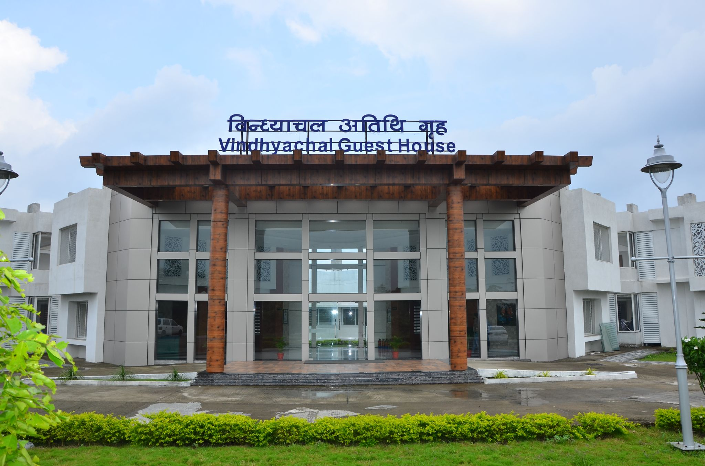
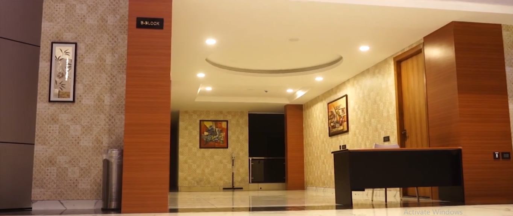
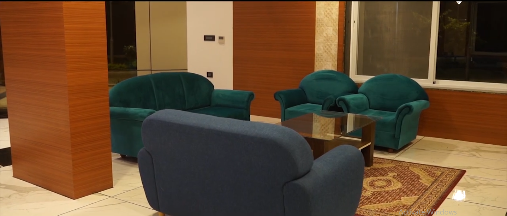
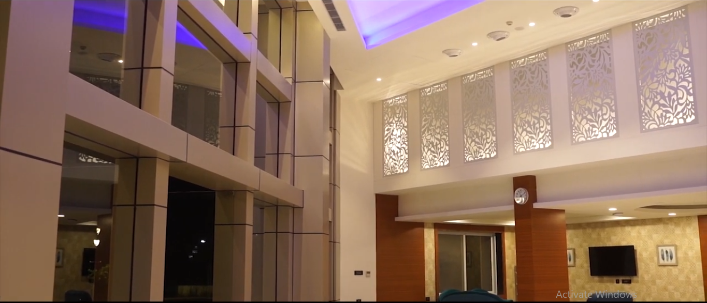
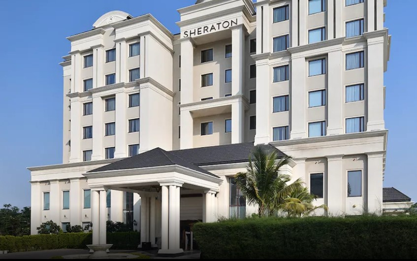
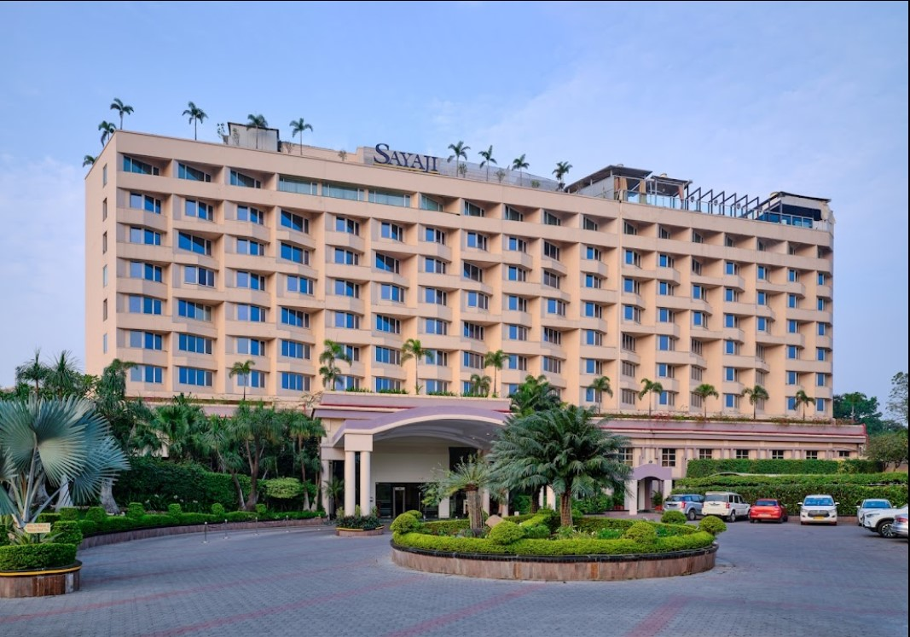
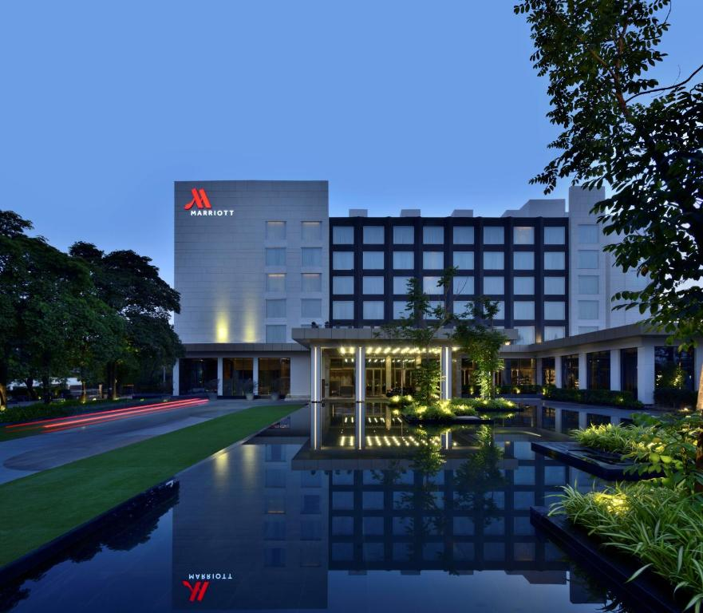
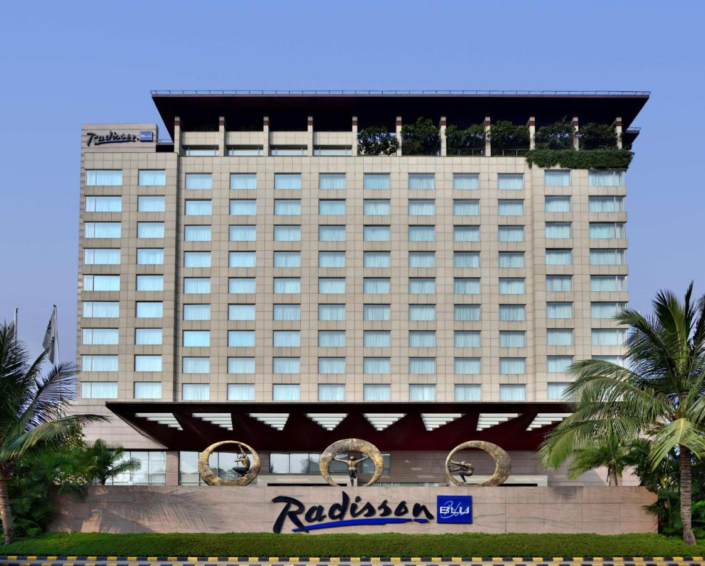

At IIT Indore
At IIT Indore, we have a fully furnished guest house and studio apartments of international standards. As per the institute accommodation policy, the IIT Indore Guest House accommodation charges are Rs.2500 to 3300 per night.




Other Accommodation Nearby
IIT Indore is located in Simrol, which is about 25 km from Indore city center. A number of 5 star and 4-star hotels are available near the venue. Around 1000 rooms are available within 20-30 mins of drive from the venue in the range of Rs.5000 to Rs.12500 per night.




Hotels in Indore
Following is the list of options for accommodation while attending IYGEC 2025
| Name | Address |
|---|---|
| The Red Maple Mashal | Jhoomer Ghat, Rasalpura, Rau, Indore, Madhya Pradesh 453446 Phone: 0731 402 0300 |
| Radisson Blu Indore | 12, Scheme No. 94C, Ring Road, Indore, Madhya Pradesh 452010 Phone: 0731 473 8888 |
| Sayaji Hotel Indore | H/1, Scheme No.54, Vijay Nagar, Indore, Madhya Pradesh 452010
Phone: 0731 400 6666 |
| Ginger Hotel Indore | Agra Bombay Road, Off NH 3, Beside Raj TV Office, Near Shaniwar Darpan, Post LIG Square, Chhoti Khajrani, Indore, Madhya Pradesh 452008, Phone: 0731 666 3333 |
| Lemon Tree Hotel | 3, R.N.T. Road, Indore, Madhya Pradesh 452001
Phone: 0731 442 3232 |